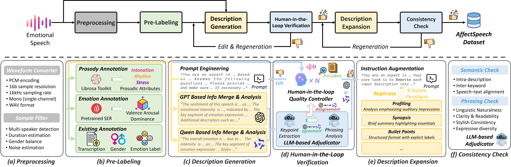

AffectSpeech: A Large-Scale Emotional Speech Dataset with Fine-Grained Textual Descriptions for Speech Emotion Captioning and Synthesis
1. Abstract
Emotion is essential in spoken communication, yet most existing frameworks in speech emotion modeling rely on predefined categories or low-dimensional continuous attributes, which offer limited expressive capacity. Recent advances in speech emotion captioning and synthesis have shown that textual descriptions provide a more flexible and interpretable alternative for representing affective characteristics in speech. However, progress in this direction is hindered by the lack of an emotional speech dataset aligned with reliable and fine-grained natural language annotations. To tackle this, we introduce AffectSpeech, a large-scale corpus of human-recorded speech enriched with structured descriptions for fine-grained emotion analysis and generation. Each utterance is characterized across six complementary dimensions, including sentiment polarity, open-vocabulary emotion captions, intensity level, prosodic attributes, prominent segments, and semantic content, enabling multi-granular modeling of vocal expression. To balance annotation quality and scalability, we adopt a human–LLM collaborative annotation pipeline that integrates algorithmic pre-labeling, multi-LLM description generation, and human-in-the-loop verification. Furthermore, these annotations are reformulated into diverse descriptive styles to enhance linguistic diversity and reduce stylistic bias in downstream modeling. Experimental results on speech emotion captioning and synthesis demonstrate that models trained on AffectSpeech consistently achieve superior performance across multiple evaluation settings.

2. Demo of AffectSpeech Dataset (random text style)
| Source Speech | Transcript | Descriptions for Speech Emotion Captioning task | Instructions for Textual Prompt-based Emotional Speech Synthesis task |
| Tim takes Sheila to see movies twice a week. | The speech is a cheerful and energetic expression of a pleasant routine. It has a positive emotional tone, reflecting happiness. The high emotional intensity is conveyed through a high pitch and loudness, especially in the early part. The content and delivery emphasize a warm and enthusiastic tone, highlighting the positive relationship and activity. | The speech is a cheerful and energetic expression of a pleasant routine. It has a positive emotional tone, reflecting happiness. The high emotional intensity is conveyed through a high pitch and loudness, especially in the early part. The content and delivery emphasize a warm and enthusiastic tone, highlighting the positive relationship and activity: “Tim takes Sheila to see movies twice a week." | |
| I hope you enjoyed yourself. | Acoustic analysis reveals that F0 (pitch) and amplitude (volume) are notably reduced, while articulation rate is decelerated, aligning with a negative valence. The entire segment’s query, "I hope you enjoyed yourself.", indicates potential regret, reinforcing perceptual cues of sadness. | Acoustic analysis reveals that F0 (pitch) and amplitude (volume) are notably reduced, while articulation rate is decelerated, aligning with a negative valence. The entire segment’s query indicates potential regret, reinforcing perceptual cues of sadness: “I hope you enjoyed yourself.” | |
| Please take this dirty table cloth to the cleaners for me. | The core statement is that the speech has a negative emotional polarity with a medium intensity of disgust. The fast tempo and medium pitch suggest heightened emotional expressivity, but the low loudness indicates a restrained expression, balancing the overall intensity. The key emotional segment is in the early part, marked by an immediate reference to a displeasing incident. Additional descriptors like irritation and annoyance provide more context to the nuanced, somewhat controlled expression of disgust. | The core statement is that the speech has a negative emotional polarity with a medium intensity of disgust. The fast tempo and medium pitch suggest heightened emotional expressivity, but the low loudness indicates a restrained expression, balancing the overall intensity. The key emotional segment is in the early part, marked by an immediate reference to a displeasing incident. Additional descriptors like irritation and annoyance provide more context to the nuanced, somewhat controlled expression of disgust: "Please take this dirty table cloth to the cleaners for me." | |
| Call an ambulance for medical assistance. | Fear dominates this speech, showing high emotional intensity via high pitch, loud volume, and fast pace. The phrases like “ambulance” and “medical assistance,” highlights distress and urgency. | Fear dominates this speech, showing high emotional intensity via high pitch, loud volume, and fast pace. The phrases like “ambulance” and “medical assistance,” highlights distress and urgency: “Call an ambulance for medical assistance.” | |
| Dogs are sitting by the door! | The speaker's emotional tone is surprise, with a medium intensity. The speech rate is fast, but the volume is low, suggesting a moderate level of surprise or excitement. This emotional reaction is most prominent in the early and late part of the speech, possibly due to the observation of the dogs' position. Additional descriptors might include bewilderment or curiosity, indicating a mild, unexpected response. | The speaker's emotional tone is surprise, with a medium intensity. The speech rate is fast, but the volume is low, suggesting a moderate level of surprise or excitement. This emotional reaction is most prominent in the early and late part of the speech, possibly due to the observation of the dogs' position. Additional descriptors might include bewilderment or curiosity, indicating a mild, unexpected response: "Dogs are sitting by the door!" | |
| Kids are talking by the door. | The speech emotion can be described as calm, indicating a state of peacefulness. The emotional intensity is low, which typically does not involve high arousal or dramatic fluctuations in emotion. Considering the low pitch and low loudness, these contribute to a subdued expression, assuming a steady emotional tone throughout. Additional descriptors like "relaxed" or "serene" might also accurately capture the emotional nuance of the speech based on the attributes described. | The speech emotion can be described as calm, indicating a state of peacefulness. The emotional intensity is low, which typically does not involve high arousal or dramatic fluctuations in emotion. Considering the low pitch and low loudness, these contribute to a subdued expression, assuming a steady emotional tone throughout. Additional descriptors like "relaxed" or "serene" might also accurately capture the emotional nuance of the speech based on the attributes described: "Kids are talking by the door." | |
| I proceed to buffalo next morning, catching the first glimpse of that important seaport of the lakes, where fifteen miles across the bay, the wagon road is almost licked by the swashing waves, and entering the city over a misfit plank road. | (1) Emotion: Neutral; (2) Pitch: Steady; (3) Loudness: Normal; (4) Speech Rate: Normal; (5) Emotional Intensity: Moderate; (6) Key Segment: Imagery of "wagon road almost licked by the swashing waves"; (7) Core Content: Descriptive and factual tone, with a blend of enthusiasm and a hint of criticism about the journey to Buffalo. | (1) Emotion: Neutral; (2) Pitch: Steady; (3) Loudness: Normal; (4) Speech Rate: Normal; (5) Emotional Intensity: Moderate; (6) Key Segment: Imagery of "wagon road almost licked by the swashing waves"; (7) Core Content: Descriptive and factual tone, with a blend of enthusiasm and a hint of criticism about the journey to Buffalo. "I proceed to buffalo next morning, catching the first glimpse of that important seaport of the lakes, where fifteen miles across the bay, the wagon road is almost licked by the swashing waves, and entering the city over a misfit plank road." | |
| It s eleven o'clock! | The speech carries a distinctly negative emotional tone, with high intensity. The most significant emotional expression is concentrated in the latter portion of the utterance, characterized by a marked increase in the speaker's affective delivery. | The speech carries a distinctly negative emotional tone, with high intensity. The most significant emotional expression is concentrated in the latter portion of the utterance, characterized by a marked increase in the speaker s affective delivery: “It s eleven o'clock!” | |
| Don't ask me to carry an oily rag like that. | Acoustic analysis reveals F0 stability within normal pitch range alongside consistent amplitude (loudness). Speech rate aligns with typical norms, reinforcing medium-intensity contempt. The critical emotional marker lies in the middle portion at "an oily rag like that," where disdain peaks. Additional descriptors include frustration and disapproving undertones, emphasizing clear yet measured negative sentiment. | Acoustic analysis reveals F0 stability within normal pitch range alongside consistent amplitude (loudness). Speech rate aligns with typical norms, reinforcing medium-intensity contempt. The critical emotional marker lies in the middle portion at "an oily rag like that," where disdain peaks. Additional descriptors include frustration and disapproving undertones, emphasizing clear yet measured negative sentiment: "Don't ask me to carry an oily rag like that." |